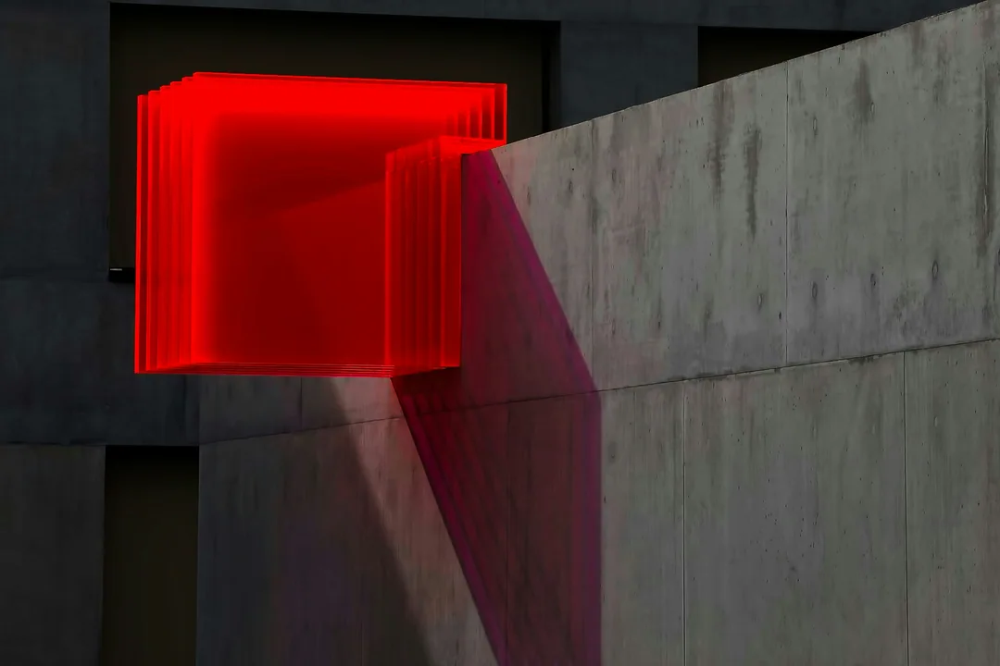

Webdesign
Mach Eindruck.
Bleib im Kopf.
Dein Unternehmen hat Charakter. Deine Website sollte ihn zeigen. Mit strategischem Design, psychologischem Verständnis und einer digitalen Präsenz, die Menschen nicht nur erreicht, sondern auch für dein Angebot begeistert.
Webdesign entdeckenDie Webdesign-Seite folgt. Zurück zur Übersicht